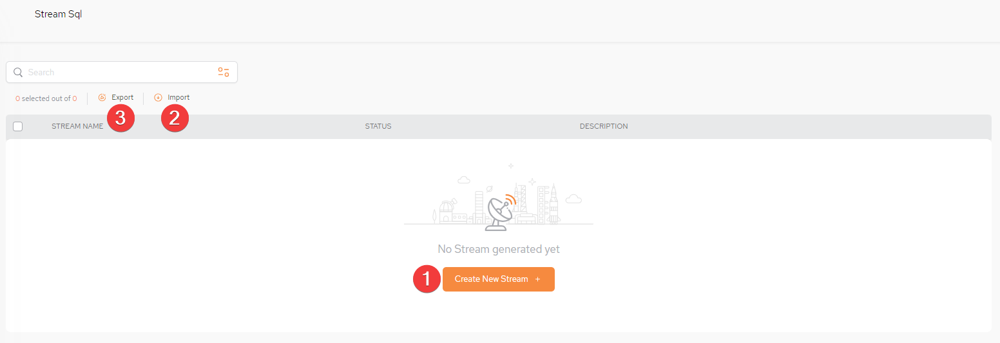
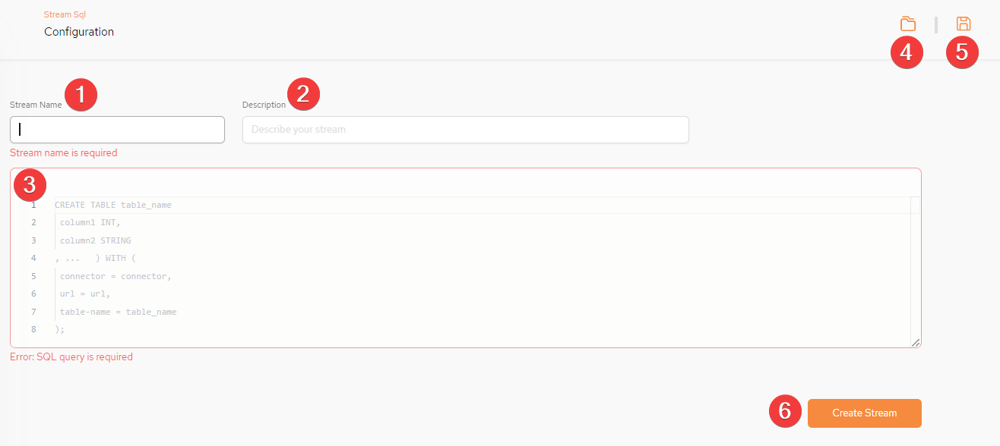

StreamSQL allows to SpaceDeck to implement a low code (SQL) approach to define and operate with ad-hoc data flows, such as read from Kafka and write directly to Space or read from one Kafka topic and write to another Kafka topic.
StreamSQL operations activities can be defined using SQL statements, for example:
Define structure of messages in a Kafka topic as a table (CREATE TABLE)
Define a data flow (stream of data or pipeline) as INSERT AS SELECT statement
Perform a join of data flow from different Kafka topics using a standard SQL join statement

Create New Stream + - Click this to create a new stream
Import -
Export - export the query result locally to a csv-format file
Table Columns:
STREAM NAME - the name of the Stream SQL
STATUS -
DESCRIPTION - a free-format description of the stream SQL
From the main screen, click Create New Stream + to create a new stream. This Configuration screen will then be displayed:

The fields withred comments are mandatory.
Stream Name – export the query result locally to a csv-format file. Mandatory field.
Description – Write a short description of the stream SQL being created.
(Body of the query) – enter a SQL-99 compliant query. What is displayed initially is sample syntax. Mandatory field.
Saved Queries - a list of previously saved queries.
Save Query - save the query which will then be accessible via the Saved Queries drop-down.
Create Stream - click on this to create the Stream SQL.